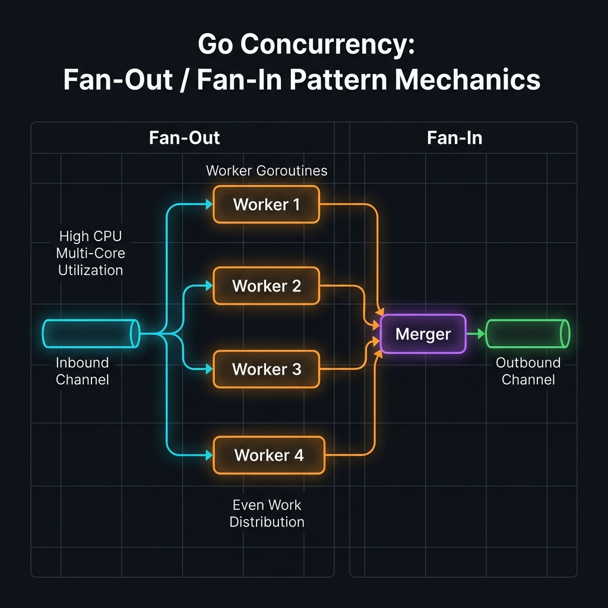

Fan-Out / Fan-In Pattern
Fan-Out/Fan-In là một trong những pattern concurrency mạnh mẽ nhất trong Go — cho phép phân phối công việc ra nhiều goroutine (fan-out) và sau đó hợp nhất tất cả kết quả vào một luồng duy nhất (fan-in). Pattern này tận dụng tối đa CPU đa nhân, giảm latency, tăng throughput, và là nền tảng của các hệ thống pipeline hiện đại trong Go. Tài liệu này đi từ định nghĩa cơ bản đến kỹ thuật expert-level với generics, reactive stream và benchmark thực tế.
- Fan-Out/Fan-In là gì? — Định nghĩa & bối cảnh
- Tại sao Fan-Out/Fan-In quan trọng?
- Giải phẫu Pattern — Sơ đồ luồng dữ liệu
- Fan-Out cơ bản — Spawn nhiều goroutine
- Fan-In — Merge nhiều channel về một
- Worker Pool với bounded concurrency
- Pipeline đa tầng với Fan-Out/Fan-In
- Context Cancellation & Deadline
- Ordered Fan-In — Giữ thứ tự kết quả
- ErrGroup Hybrid — Xử lý lỗi đồng thời
- Dynamic Fan-Out — Số worker thay đổi runtime
- Backpressure Control — Semaphore pattern
- Generic Fan-Out — Go 1.18+
- Reactive Stream & Observable
- Benchmark & Profiling thực tế
- Anti-patterns & Best Practices
- Tài liệu tham khảo & Nguồn đọc thêm
Fan-Out / Fan-In là gì?

Trong lập trình concurrency với Go, Fan-Out là kỹ thuật khởi chạy nhiều goroutine cùng xử lý dữ liệu từ một input channel, còn Fan-In là kỹ thuật hợp nhất output từ nhiều channel về một channel duy nhất để consumer đọc.
Hai khái niệm này thường đi đôi với nhau, tạo thành một cặp complementary: bạn fan-out để xử lý song song, rồi fan-in để thu thập kết quả tuần tự.
So sánh với Sequential Processing
✗ Sequential (tuần tự)
- Xử lý từng item một
- CPU rảnh trong khi I/O chờ
- Latency = N × single_item_time
- Throughput thấp
✓ Fan-Out/Fan-In (song song)
- Xử lý N item đồng thời
- CPU luôn bận, không lãng phí
- Latency ≈ single_item_time
- Throughput × N workers
Tại sao Fan-Out/Fan-In quan trọng?
| Use case | Fan-Out giải quyết | Hiệu quả |
|---|---|---|
| Gọi nhiều API đồng thời | Spawn N goroutine, mỗi cái gọi 1 API | Giảm latency N lần |
| Xử lý file/image batch | Phân chia file ra N worker pool | Tận dụng đa core CPU |
| Database query song song | Fan-out đến nhiều DB shard | Throughput tăng tuyến tính |
| Stream data processing | Đọc Kafka/NATS, xử lý song song | Real-time với low latency |
| Web scraping / crawling | N goroutine crawl URLs song song | Tăng tốc N× so với tuần tự |
| MapReduce-style computation | Map (fan-out) → Reduce (fan-in) | Xử lý Big Data hiệu quả |
Go Concurrency Philosophy: "Do not communicate by sharing memory; share memory by communicating." — Fan-Out/Fan-In hiện thân trực tiếp triết lý này: dữ liệu chạy qua channel, không qua shared state.
Giải phẫu Pattern — Sơ đồ luồng dữ liệu
Một Fan-Out/Fan-In pattern hoàn chỉnh bao gồm 4 thành phần chính:
Fan-Out cơ bản — Spawn nhiều goroutine
Ví dụ đơn giản nhất: đọc từ một input channel và spawn N goroutine cùng đọc từ channel đó.
package main import ( "fmt" "sync" "time" ) // producer tạo các item và gửi vào channel func producer(nums ...int) <-chan int { out := make(chan int) go func() { defer close(out) // QUAN TRỌNG: chỉ sender mới close channel for _, n := range nums { out <- n } }() return out } // worker xử lý công việc và trả về kết quả qua channel riêng func worker(id int, jobs <-chan int) <-chan string { out := make(chan string) go func() { defer close(out) for job := range jobs { // đọc cho đến khi channel bị đóng time.Sleep(10 * time.Millisecond) // simulate work out <- fmt.Sprintf("worker-%d processed %d", id, job) } }() return out } // fanOut khởi tạo N worker cùng đọc từ cùng một input channel func fanOut(jobs <-chan int, numWorkers int) []<-chan string { workers := make([]<-chan string, numWorkers) for i := 0; i < numWorkers; i++ { workers[i] = worker(i+1, jobs) // mỗi worker cùng nhận từ jobs } return workers } func main() { // Tạo 10 jobs jobs := producer(1, 2, 3, 4, 5, 6, 7, 8, 9, 10) // Fan-Out ra 3 workers workerChans := fanOut(jobs, 3) // Thu thập kết quả từ từng worker (naive - chưa có fan-in) var wg sync.WaitGroup for _, ch := range workerChans { wg.Add(1) go func(c <-chan string) { defer wg.Done() for result := range c { fmt.Println(result) } }(ch) } wg.Wait() }
Lưu ý quan trọng: Khi nhiều goroutine cùng đọc từ một channel, Go scheduler phân phối các item ngẫu nhiên giữa các reader. Đây chính là cơ chế load balancing tự nhiên của Go channels.
Fan-In — Merge nhiều channel về một
Fan-In (hay còn gọi là multiplexing) là hàm nhận
nhiều <-chan T và trả về một <-chan T duy nhất.
Mỗi input channel được đọc bởi một goroutine riêng, tất cả cùng ghi vào output channel.
package main import ( "context" "fmt" "sync" ) // merge hợp nhất nhiều channels thành một output channel // Sử dụng context để hỗ trợ cancellation func merge(ctx context.Context, channels ...<-chan int) <-chan int { var wg sync.WaitGroup merged := make(chan int, len(channels)) // buffered để tránh blocking // output goroutine: đọc từ một channel và gửi vào merged output := func(c <-chan int) { defer wg.Done() for v := range c { select { case <-ctx.Done(): // thoát khi context bị cancel return case merged <- v: // gửi vào output } } } // Khởi chạy goroutine cho mỗi input channel wg.Add(len(channels)) for _, c := range channels { go output(c) } // Đóng merged khi tất cả goroutine hoàn thành go func() { wg.Wait() close(merged) }() return merged } // Ví dụ sử dụng merge với Fan-Out/Fan-In đầy đủ func main() { ctx, cancel := context.WithCancel(context.Background()) defer cancel() // Tạo input in := producer(1, 2, 3, 4, 5, 6) // Fan-Out: mỗi channel nhận một phần dữ liệu c1 := square(ctx, in) c2 := square(ctx, in) c3 := square(ctx, in) // Fan-In: gộp c1, c2, c3 thành một channel out := merge(ctx, c1, c2, c3) // Consumer: đọc kết quả for result := range out { fmt.Println(result) // thứ tự không đảm bảo } } func square(ctx context.Context, in <-chan int) <-chan int { out := make(chan int) go func() { defer close(out) for n := range in { select { case <-ctx.Done(): return case out <- n * n: } } }() return out }
Worker Pool — Bounded Fan-Out
Thay vì spawn goroutine không giới hạn, Worker Pool giữ số goroutine cố định, mỗi goroutine liên tục nhận job từ queue. Đây là pattern production phổ biến nhất.
package main import ( "context" "fmt" "sync" "time" ) type Job struct { ID int Data string } type Result struct { JobID int Output string Err error } // WorkerPool tạo pool gồm numWorkers goroutine, trả về channel kết quả func WorkerPool( ctx context.Context, numWorkers int, jobs <-chan Job, ) <-chan Result { results := make(chan Result, numWorkers) // buffer = số worker var wg sync.WaitGroup // Khởi chạy numWorkers goroutine for i := 0; i < numWorkers; i++ { wg.Add(1) go func(workerID int) { defer wg.Done() for { select { case <-ctx.Done(): return // context cancelled case job, ok := <-jobs: if !ok { return // channel đã đóng, worker thoát } result := processJob(ctx, workerID, job) select { case <-ctx.Done(): return case results <- result: } } } }(i) } // Đóng results khi tất cả worker done go func() { wg.Wait() close(results) }() return results } func processJob(ctx context.Context, workerID int, job Job) Result { // Simulate CPU/IO work select { case <-ctx.Done(): return Result{JobID: job.ID, Err: ctx.Err()} case <-time.After(50 * time.Millisecond): return Result{ JobID: job.ID, Output: fmt.Sprintf("[worker-%d] processed: %s", workerID, job.Data), } } } func main() { ctx, cancel := context.WithTimeout(context.Background(), 5*time.Second) defer cancel() // Tạo buffered job channel jobs := make(chan Job, 100) // Gửi jobs go func() { defer close(jobs) for i := 1; i <= 20; i++ { jobs <- Job{ID: i, Data: fmt.Sprintf("task-%d", i)} } }() // Chạy 5 workers results := WorkerPool(ctx, 5, jobs) // Collect kết quả for r := range results { if r.Err != nil { fmt.Printf("❌ Job %d failed: %v\n", r.JobID, r.Err) continue } fmt.Println("✓", r.Output) } }
Pipeline đa tầng với Fan-Out/Fan-In
Pipeline kết hợp nhiều stage, mỗi stage có thể fan-out để tăng tốc xử lý. Mô hình này phổ biến trong ETL (Extract-Transform-Load) và stream processing.
package main import ( "context" "fmt" "strings" "sync" ) type Record struct { ID int Value string } // Stage 1: Đọc dữ liệu nguồn func readStage(ctx context.Context, data []Record) <-chan Record { out := make(chan Record, len(data)) go func() { defer close(out) for _, r := range data { select { case <-ctx.Done(): return case out <- r: } } }() return out } // Stage 2: Transform (chạy song song nhiều instance) func transformStage(ctx context.Context, in <-chan Record) <-chan Record { out := make(chan Record) go func() { defer close(out) for r := range in { select { case <-ctx.Done(): return case out <- Record{ ID: r.ID, Value: strings.ToUpper(r.Value), // transform }: } } }() return out } // fanOutTransform: spawn N transform instances và merge kết quả func fanOutTransform(ctx context.Context, in <-chan Record, n int) <-chan Record { // Fan-Out: tạo N transform stages outputs := make([]<-chan Record, n) for i := range outputs { outputs[i] = transformStage(ctx, in) } // Fan-In: merge N outputs về 1 return mergeRecords(ctx, outputs...) } // mergeRecords: generic fan-in cho Record channel func mergeRecords(ctx context.Context, channels ...<-chan Record) <-chan Record { var wg sync.WaitGroup merged := make(chan Record, len(channels)) for _, ch := range channels { wg.Add(1) go func(c <-chan Record) { defer wg.Done() for r := range c { select { case <-ctx.Done(): return case merged <- r: } } }(ch) } go func() { wg.Wait(); close(merged) }() return merged } // Stage 3: Validate func validateStage(ctx context.Context, in <-chan Record) <-chan Record { out := make(chan Record) go func() { defer close(out) for r := range in { if r.Value == "" { continue } // skip invalid select { case <-ctx.Done(): return case out <- r: } } }() return out } func main() { ctx, cancel := context.WithCancel(context.Background()) defer cancel() data := []Record{ {1, "hello"}, {2, "world"}, {3, "golang"}, {4, "fan-out"}, {5, "fan-in"}, {6, "pattern"}, } // Pipeline: Read → FanOut(Transform×3) → Validate → Sink stage1 := readStage(ctx, data) stage2 := fanOutTransform(ctx, stage1, 3) // 3 parallel transforms stage3 := validateStage(ctx, stage2) for r := range stage3 { fmt.Printf("ID=%d Value=%s\n", r.ID, r.Value) } }
Context Cancellation & Deadline
Mọi hàm trong pipeline phải lắng nghe ctx.Done() để thoát sạch
khi có cancel hoặc timeout. Đây là yêu cầu bắt buộc trong production.
package main import ( "context" "fmt" "sync" "time" ) // fetchURL giả lập HTTP call có thể timeout func fetchURL(ctx context.Context, url string) (string, error) { select { case <-ctx.Done(): return "", fmt.Errorf("cancelled: %s", url) case <-time.After(200 * time.Millisecond): // simulate latency return fmt.Sprintf("OK: %s", url), nil } } type URLResult struct { URL string Body string Err error } // FetchAll fan-out nhiều URL song song với context deadline func FetchAll(ctx context.Context, urls []string) <-chan URLResult { results := make(chan URLResult, len(urls)) var wg sync.WaitGroup for _, url := range urls { wg.Add(1) go func(u string) { // capture loop variable defer wg.Done() body, err := fetchURL(ctx, u) select { case <-ctx.Done(): results <- URLResult{URL: u, Err: ctx.Err()} case results <- URLResult{URL: u, Body: body, Err: err}: } }(url) } go func() { wg.Wait(); close(results) }() return results } func main() { // Deadline: tất cả URL phải fetch xong trong 1 giây ctx, cancel := context.WithTimeout(context.Background(), 1*time.Second) defer cancel() urls := []string{ "https://api.example.com/v1/users", "https://api.example.com/v1/orders", "https://api.example.com/v1/products", "https://api.example.com/v1/reviews", } results := FetchAll(ctx, urls) for r := range results { if r.Err != nil { fmt.Printf("❌ %s → %v\n", r.URL, r.Err) } else { fmt.Printf("✓ %s\n", r.Body) } } }
Ordered Fan-In — Giữ thứ tự kết quả
Mặc định, Fan-In không đảm bảo thứ tự. Để giữ thứ tự gốc, cần gán sequence number cho từng item và dùng min-heap hoặc map để reorder trước khi xuất.
package main import ( "context" "fmt" "sync" "time" ) type IndexedJob struct { Index int // vị trí gốc Value int } type IndexedResult struct { Index int Result int } // orderedWorker xử lý và giữ nguyên Index func orderedWorker(ctx context.Context, in <-chan IndexedJob) <-chan IndexedResult { out := make(chan IndexedResult) go func() { defer close(out) for job := range in { // Simulate non-uniform processing time time.Sleep(time.Duration((10-job.Index%5)*10) * time.Millisecond) result := job.Value * job.Value select { case <-ctx.Done(): return case out <- IndexedResult{Index: job.Index, Result: result}: } } }() return out } // mergeOrdered: merge nhiều channel và reorder theo Index func mergeOrdered( ctx context.Context, total int, channels ...<-chan IndexedResult, ) <-chan int { // Step 1: Fan-In unordered var wg sync.WaitGroup unordered := make(chan IndexedResult, total) for _, ch := range channels { wg.Add(1) go func(c <-chan IndexedResult) { defer wg.Done() for r := range c { select { case <-ctx.Done(): return case unordered <- r: } } }(ch) } go func() { wg.Wait(); close(unordered) }() // Step 2: Reorder bằng map ordered := make(chan int, total) go func() { defer close(ordered) buffer := make(map[int]int) // index → result next := 0 for r := range unordered { buffer[r.Index] = r.Result // Xuất các item liên tiếp theo thứ tự for { v, ok := buffer[next] if !ok { break } ordered <- v delete(buffer, next) next++ } } }() return ordered } func main() { ctx := context.Background() inputs := []int{1, 2, 3, 4, 5, 6, 7, 8} // Tạo indexed jobs jobs := make(chan IndexedJob, len(inputs)) for i, v := range inputs { jobs <- IndexedJob{Index: i, Value: v} } close(jobs) // Fan-Out 4 workers w1 := orderedWorker(ctx, jobs) w2 := orderedWorker(ctx, jobs) w3 := orderedWorker(ctx, jobs) w4 := orderedWorker(ctx, jobs) // Fan-In với reordering result := mergeOrdered(ctx, len(inputs), w1, w2, w3, w4) fmt.Print("Ordered results: [") for v := range result { fmt.Printf("%d ", v) } fmt.Println("]") // Output: Ordered results: [1 4 9 16 25 36 49 64] }
ErrGroup Hybrid — Xử lý lỗi đồng thời
golang.org/x/sync/errgroup cung cấp cách gọn hơn để fan-out nhiều task
và thu thập lỗi đầu tiên xảy ra, đồng thời cancel tất cả goroutine còn lại.
package main import ( "context" "fmt" "sync" "golang.org/x/sync/errgroup" ) type APIResponse struct { Service string Data string } // GatherServices: fan-out đến nhiều service, dừng ngay khi có lỗi func GatherServices(ctx context.Context, services []string) ([]APIResponse, error) { g, ctx := errgroup.WithContext(ctx) // ctx mới sẽ cancel khi có lỗi results := make([]APIResponse, len(services)) var mu sync.Mutex for i, svc := range services { i, svc := i, svc // capture loop variables (Go <1.22) g.Go(func() error { resp, err := callService(ctx, svc) if err != nil { return fmt.Errorf("service %s: %w", svc, err) } mu.Lock() results[i] = resp mu.Unlock() return nil }) } if err := g.Wait(); err != nil { return nil, err // trả về lỗi đầu tiên } return results, nil } // GatherWithLimit: fan-out với giới hạn số goroutine đồng thời func GatherWithLimit(ctx context.Context, services []string, limit int) ([]APIResponse, error) { g, ctx := errgroup.WithContext(ctx) g.SetLimit(limit) // max goroutine đồng thời = limit results := make([]APIResponse, len(services)) var mu sync.Mutex for i, svc := range services { i, svc := i, svc g.Go(func() error { resp, err := callService(ctx, svc) if err != nil { return err } mu.Lock() results[i] = resp mu.Unlock() return nil }) } return results, g.Wait() } func callService(ctx context.Context, name string) (APIResponse, error) { // Simulate service call return APIResponse{Service: name, Data: "ok"}, nil } func main() { ctx := context.Background() services := []string{"auth", "user", "payment", "notification", "analytics"} results, err := GatherWithLimit(ctx, services, 3) // max 3 đồng thời if err != nil { fmt.Printf("❌ Error: %v\n", err) return } for _, r := range results { fmt.Printf("✓ %s: %s\n", r.Service, r.Data) } }
Dynamic Fan-Out — Số worker thay đổi runtime
Thay vì số worker cố định, Dynamic Fan-Out cho phép thêm/bớt worker tại runtime dựa trên tải hệ thống, queue size hoặc metrics.
package main import ( "context" "fmt" "sync" "sync/atomic" "time" ) // DynamicPool: worker pool có thể scale in/out lúc runtime type DynamicPool struct { jobs chan int results chan string workerCnt atomic.Int32 wg sync.WaitGroup ctx context.Context cancel context.CancelFunc } func NewDynamicPool(bufSize int) *DynamicPool { ctx, cancel := context.WithCancel(context.Background()) return &DynamicPool{ jobs: make(chan int, bufSize), results: make(chan string, bufSize), ctx: ctx, cancel: cancel, } } // Scale thêm n worker vào pool func (p *DynamicPool) Scale(n int) { for i := 0; i < n; i++ { p.wg.Add(1) p.workerCnt.Add(1) go func() { defer p.wg.Done() defer p.workerCnt.Add(-1) for { select { case <-p.ctx.Done(): return case job, ok := <-p.jobs: if !ok { return } time.Sleep(20 * time.Millisecond) p.results <- fmt.Sprintf("processed(%d)", job) } } }() } } func (p *DynamicPool) WorkerCount() int32 { return p.workerCnt.Load() } func (p *DynamicPool) Submit(job int) { p.jobs <- job } func (p *DynamicPool) Results() <-chan string { return p.results } func (p *DynamicPool) Shutdown() { p.cancel() close(p.jobs) p.wg.Wait() close(p.results) } func main() { pool := NewDynamicPool(100) // Bắt đầu với 2 worker pool.Scale(2) fmt.Printf("Workers: %d\n", pool.WorkerCount()) // Submit 10 jobs go func() { for i := 1; i <= 10; i++ { pool.Submit(i) } }() // Scale up thêm 3 worker sau 100ms time.AfterFunc(100*time.Millisecond, func() { pool.Scale(3) fmt.Printf("Scaled up! Workers: %d\n", pool.WorkerCount()) }) // Đọc 10 kết quả rồi shutdown for i := 0; i < 10; i++ { fmt.Println(<-pool.Results()) } pool.Shutdown() }
Backpressure Control — Semaphore Pattern
Khi producer nhanh hơn consumer, cần backpressure để tránh
goroutine leak và memory explosion. Semaphore (channel-based hoặc x/sync/semaphore)
là giải pháp chuẩn.
package main import ( "context" "fmt" "golang.org/x/sync/semaphore" "time" ) // Semaphore bằng channel (không cần external package) type Semaphore chan struct{} func NewSemaphore(n int) Semaphore { return make(chan struct{}, n) } func (s Semaphore) Acquire() { s <- struct{}{} } func (s Semaphore) Release() { <-s } func (s Semaphore) TryAcquire() bool { select { case s <- struct{}{}: return true default: return false // channel đầy = không acquire được } } // FanOutWithBackpressure: giới hạn số goroutine đồng thời bằng semaphore func FanOutWithBackpressure( ctx context.Context, items []int, maxConcurrent int, ) <-chan string { sem := NewSemaphore(maxConcurrent) // max goroutine đồng thời results := make(chan string, len(items)) go func() { defer close(results) var wg sync.WaitGroup for _, item := range items { select { case <-ctx.Done(): return default: } sem.Acquire() // block nếu đang có maxConcurrent goroutine wg.Add(1) go func(v int) { defer wg.Done() defer sem.Release() // luôn release khi xong time.Sleep(30 * time.Millisecond) select { case <-ctx.Done(): return case results <- fmt.Sprintf("result(%d)", v*v): } }(item) } wg.Wait() }() return results } // Dùng x/sync/semaphore.Weighted cho context-aware acquire func FanOutWeighted(ctx context.Context, items []int) <-chan string { sem := semaphore.NewWeighted(5) // max 5 concurrent results := make(chan string, len(items)) go func() { defer close(results) var wg sync.WaitGroup for _, item := range items { if err := sem.Acquire(ctx, 1); err != nil { break } wg.Add(1) go func(v int) { defer wg.Done() defer sem.Release(1) results <- fmt.Sprintf("weighted(%d)", v) }(item) } wg.Wait() }() return results } func main() { ctx := context.Background() items := []int{1,2,3,4,5,6,7,8,9,10} results := FanOutWithBackpressure(ctx, items, 3) // max 3 đồng thời for r := range results { fmt.Println(r) } }
Generic Fan-Out — Go 1.18+
Go 1.18 giới thiệu Generics, cho phép viết hàm fan-out/fan-in
type-safe và reusable cho mọi kiểu dữ liệu, không cần interface{}.
package main import ( "context" "fmt" "sync" ) // Merge: generic fan-in — hợp nhất nhiều channels cùng kiểu T func Merge[T any](ctx context.Context, channels ...<-chan T) <-chan T { var wg sync.WaitGroup merged := make(chan T, len(channels)) output := func(c <-chan T) { defer wg.Done() for v := range c { select { case <-ctx.Done(): return case merged <- v: } } } wg.Add(len(channels)) for _, c := range channels { go output(c) } go func() { wg.Wait(); close(merged) }() return merged } // FanOut: generic fan-out — phân phối T từ input ra N workers func FanOut[T, R any]( ctx context.Context, input <-chan T, numWorkers int, process func(context.Context, T) (R, error), ) <-chan R { // Tạo N worker channels workerOuts := make([]<-chan R, numWorkers) for i := 0; i < numWorkers; i++ { workerOuts[i] = runWorker(ctx, input, process) } // Fan-In generic return Merge(ctx, workerOuts...) } func runWorker[T, R any]( ctx context.Context, in <-chan T, process func(context.Context, T) (R, error), ) <-chan R { out := make(chan R) go func() { defer close(out) for item := range in { result, err := process(ctx, item) if err != nil { continue } select { case <-ctx.Done(): return case out <- result: } } }() return out } // Pipeline: compose nhiều bước transform type-safe func Pipeline[T any]( ctx context.Context, source <-chan T, stages ...func(<-chan T) <-chan T, ) <-chan T { current := source for _, stage := range stages { current = stage(current) } return current } // ─── Ví dụ sử dụng ─────────────────────────────── func main() { ctx := context.Background() // Source: int channel source := make(chan int, 10) go func() { defer close(source) for i := 1; i <= 12; i++ { source <- i } }() // Generic FanOut: int → string với 4 workers results := FanOut(ctx, source, 4, func(ctx context.Context, n int) (string, error) { return fmt.Sprintf("n=%d, n²=%d", n, n*n), nil }) for r := range results { fmt.Println(r) } }
Type Inference: Go compiler có thể tự suy ra type parameter từ arguments, nên thường không cần viết FanOut[int, string](...) mà chỉ cần FanOut(...).
Reactive Stream & Observable
Kết hợp Fan-Out/Fan-In với pattern Observable cho phép subscribe nhiều
consumer vào cùng một data stream, với operator như Map, Filter, Take.
package main import ( "context" "fmt" "sync" ) // Stream là một channel-based observable type Stream[T any] struct { source <-chan T ctx context.Context } // FromSlice tạo Stream từ slice func FromSlice[T any](ctx context.Context, items []T) *Stream[T] { ch := make(chan T, len(items)) go func() { defer close(ch) for _, item := range items { select { case <-ctx.Done(): return case ch <- item: } } }() return &Stream[T]{source: ch, ctx: ctx} } // Map biến đổi mỗi element với fan-out N workers func Map[T, R any](s *Stream[T], workers int, fn func(T) R) *Stream[R] { outs := make([]<-chan R, workers) for i := range outs { out := make(chan R) outs[i] = out go func(o chan R) { defer close(o) for v := range s.source { select { case <-s.ctx.Done(): return case o <- fn(v): } } }(out) } merged := Merge(s.ctx, outs...) return &Stream[R]{source: merged, ctx: s.ctx} } // Filter giữ lại element thỏa điều kiện func Filter[T any](s *Stream[T], pred func(T) bool) *Stream[T] { out := make(chan T) go func() { defer close(out) for v := range s.source { if pred(v) { select { case <-s.ctx.Done(): return case out <- v: } } } }() return &Stream[T]{source: out, ctx: s.ctx} } // Broadcast: fan-out 1 stream ra N subscriber channels func Broadcast[T any](s *Stream[T], n int) []*Stream[T] { outs := make([]chan T, n) for i := range outs { outs[i] = make(chan T, 8) } go func() { defer func() { for _, o := range outs { close(o) } }() var wg sync.WaitGroup for v := range s.source { v := v for _, o := range outs { wg.Add(1) go func(ch chan T) { defer wg.Done() ch <- v }(o) } wg.Wait() } }() streams := make([]*Stream[T], n) for i, o := range outs { streams[i] = &Stream[T]{source: o, ctx: s.ctx} } return streams } // Collect thu thập tất cả element vào slice func Collect[T any](s *Stream[T]) []T { var result []T for v := range s.source { result = append(result, v) } return result } func main() { ctx := context.Background() // Chain: FromSlice → Map(×3 workers) → Filter → Collect result := Collect( Filter( Map(FromSlice(ctx, []int{1,2,3,4,5,6,7,8,9,10}), 3, func(n int) int { return n * n }, // bình phương ), func(n int) bool { return n%2 == 0 }, // chỉ lấy số chẵn ), ) fmt.Println(result) // [4 16 36 64 100] (thứ tự có thể thay đổi) }
Benchmark & Profiling thực tế
package fanout_test import ( "context" "math" "testing" ) func heavyCompute(n int) float64 { return math.Sqrt(math.Pow(float64(n), 2.5)) } // Sequential baseline func BenchmarkSequential(b *testing.B) { items := make([]int, 1000) for i := range items { items[i] = i + 1 } b.ResetTimer() for i := 0; i < b.N; i++ { for _, v := range items { heavyCompute(v) } } } // Fan-Out với 4 workers func BenchmarkFanOut4Workers(b *testing.B) { items := make([]int, 1000) for i := range items { items[i] = i + 1 } b.ResetTimer() for i := 0; i < b.N; i++ { ctx := context.Background() source := make(chan int, len(items)) for _, v := range items { source <- v } close(source) results := FanOut(ctx, source, 4, func(_ context.Context, n int) (float64, error) { return heavyCompute(n), nil }) for range results {} // drain } } // Fan-Out với runtime.NumCPU() workers func BenchmarkFanOutCPUWorkers(b *testing.B) { // ... similar with numWorkers = runtime.NumCPU() }
Lệnh benchmark
# Chạy benchmark với profiling go test -bench=. -benchmem -benchtime=5s ./... # CPU profile go test -bench=BenchmarkFanOut4Workers -cpuprofile=cpu.prof go tool pprof cpu.prof # Memory profile go test -bench=. -memprofile=mem.prof go tool pprof -alloc_objects mem.prof # Race detector go test -race -bench=. ./... # Trace (goroutine timeline) go test -bench=BenchmarkFanOut4Workers -trace=trace.out go tool trace trace.out
Anti-patterns & Best Practices
| Anti-pattern | Vấn đề | Giải pháp |
|---|---|---|
goroutine leak |
Goroutine không có exit path, tồn tại mãi mãi | Luôn lắng nghe ctx.Done() hoặc channel đóng |
close từ receiver |
Panic: send on closed channel |
Chỉ sender mới được close(ch) |
unbounded fan-out |
OOM: spawn goroutine = số item input | Dùng Worker Pool hoặc Semaphore |
shared mutable state |
Data race giữa các worker | Dùng sync.Mutex hoặc channel để truyền data |
nil channel block |
Send/receive trên nil channel block mãi mãi |
Kiểm tra channel khác nil trước khi dùng |
buffer quá nhỏ |
Worker block chờ consumer, giảm hiệu năng | Buffer size = số worker hoặc dự tính throughput |
không xử lý lỗi |
Lỗi bị nuốt im lặng, khó debug | Dùng Result struct hoặc errgroup |
Checklist production
✓ Nên làm
- Luôn truyền
context.Contextvào goroutine - Đóng channel từ phía sender duy nhất
- Dùng
sync.WaitGroupđể chờ goroutine - Buffer channel khi biết số lượng
- Dùng
-raceflag khi test - Giới hạn goroutine bằng semaphore/pool
- Xử lý lỗi rõ ràng qua
Resultstruct
✗ Không nên
- Spawn goroutine không giới hạn cho input lớn
- Bỏ qua
ctx.Done()trong goroutine - Close channel từ nhiều nơi
- Dùng
time.Sleepđể sync goroutine - Share mutable map giữa nhiều goroutine
- Viết goroutine không có exit condition
- Panic trong goroutine không được recover
Tài liệu tham khảo & Nguồn đọc thêm
Official Go Documentation
GitHub — Top Repositories
Sách & Khóa học
Lộ trình học:
(1) Go Tour → (2) Rob Pike Talk → (3) Official Pipeline Blog →
(4) Concurrency in Go Book → (5) sourcegraph/conc source code →
(6) Implement benchmark thực tế với go test -bench -race